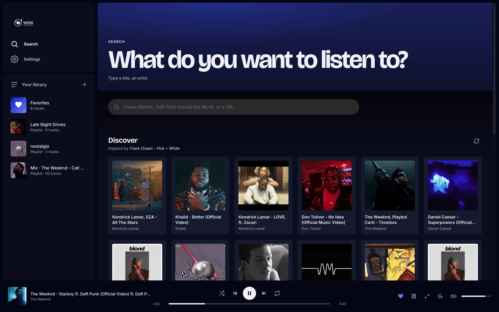
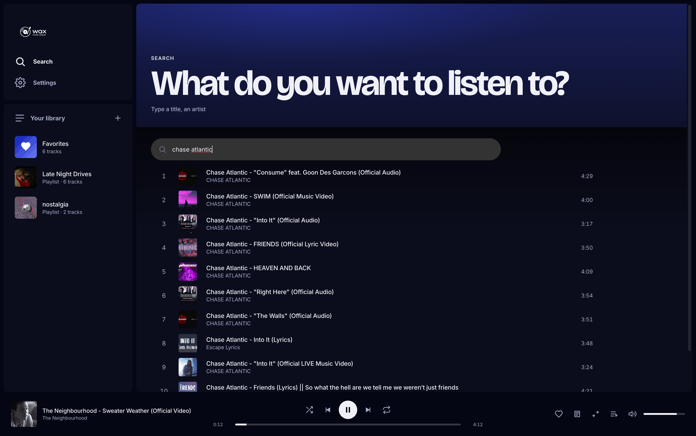
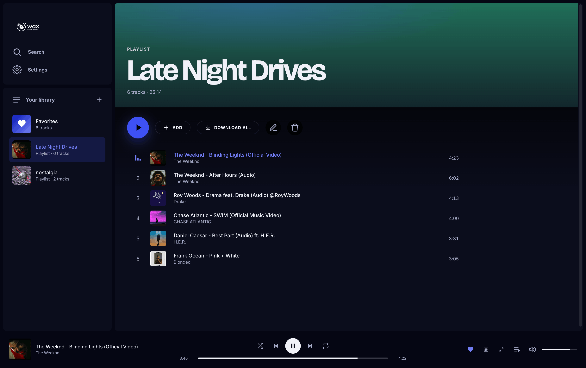
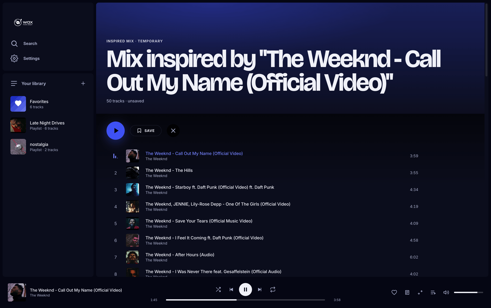
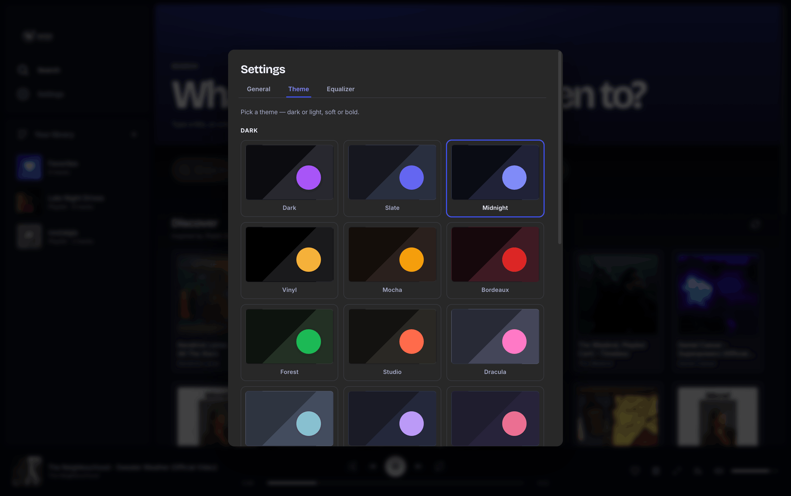

A modern desktop music player built on yt-dlp. Stream by default, download for offline. 22 themes, 3-band EQ, crossfade, drag-and-drop everything, bilingual UI, full backup/restore. macOS · Windows · Linux.
brew install yt-dlp ffmpeg
git clone https://github.com/dgadacha/wax.git
cd wax
npm install
npm run dev
The app launches automatically. To relaunch later: cd wax && npm run dev

No subscription, no ads, no telemetry. Just your library, your playlists, and the songs you actually want to listen to.
Type a track or paste a URL. Results are full-fledged tracks — heart, mix, drag, prefetch — not throwaway tiles.
Every favorite plays instantly via streaming. One click downloads it as a 320 kbps MP3 for offline listening.
Click ✨ on any track and Wax builds a 50-track stream queue inspired by it — like Spotify's track radio, on YouTube's catalog.
Bass / mid / treble (±12 dB) via Web Audio BiquadFilters. Persisted in prefs and applied live.
14 dark + 8 light, including Dracula, Nord, Tokyo Night, Rose Pine, Gruvbox. Each one comes with its own modal palette so the whole app stays cohesive.
One-click export of library + playlists + preferences into a single JSON file. Move installs, roll back, or just sleep easier.
Drag any track — a search hit, a Discover card, a library row — onto a sidebar playlist. Works for stream tracks too; they're silently added to your library.
Crossfade with ramping volumes, lyrics via lyrics.ovh, OS-level media controls, audio-reactive visualizer, full-HD covers, MediaSession integration.
English / Français picker, switches on the fly without a reload. Every label, toast, modal, hero, and theme name follows the active locale.
Real screenshots — no stock photos, no mockups.
Type a track or paste a URL. Results render as full track rows — heart, mix, drag, hover-prefetch — same shell as the rest of the app, not throwaway tiles.

Create, rename, reorder. Bulk-add a track to multiple playlists at once. "Download all" cascades MP3 downloads of every track that isn't already offline. Drag any row in the app onto a sidebar playlist to add it.

Click ✨ on a track and Wax builds a 50-track inspired queue from YouTube's RD-mix — Spotify Radio, but on YouTube's catalog. "Save" turns the temporary mix into a permanent playlist; tracks stay streamable references, no bulk download.

Tabbed settings: General · Theme · Equalizer. 22 theme presets covering dark + light, classics like Dracula and Tokyo Night included. Crossfade with adjustable duration, 3-band EQ, bilingual UI, full backup/restore with a real progress bar.

Pick one. Each theme drives its own modal and pill backgrounds so the app stays cohesive end-to-end.
No installer yet — the install block at the top of the page is the whole story. You'll need node 18+, yt-dlp, ffmpeg on your PATH. On Windows, install yt-dlp / ffmpeg via your favorite package manager and skip the brew line.